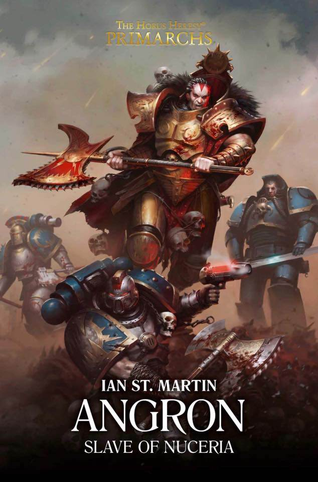

ANGRON: SLAVE OF NUCERIA

Author: Ian St. Martin
Format: Novel
Newly reunited with the Legion once known as the War Hounds, Angron gives his sons an ultimatum. They must decide whether following their primarch means taking on his deepest wounds.
Introduction reviewed against Black Library’s description on 2026-09-27. The publisher page may contain spoilers.
Publication facts: publisher source, checked 2026-09-26.
Open this work in the interactive Archive to track reading progress and explore related works.